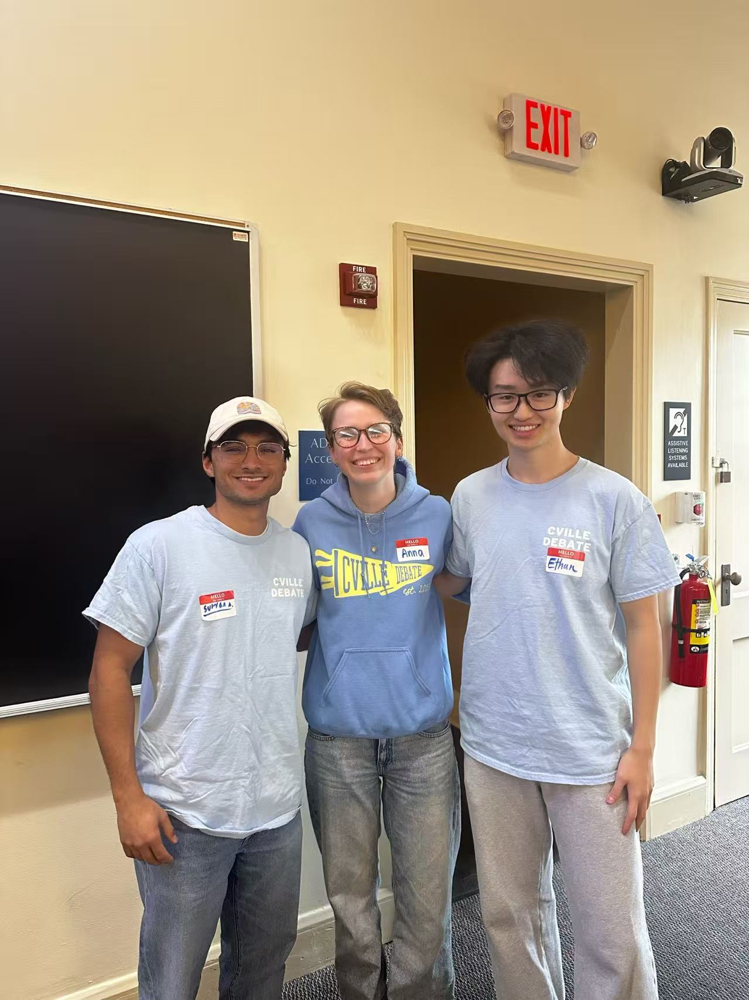
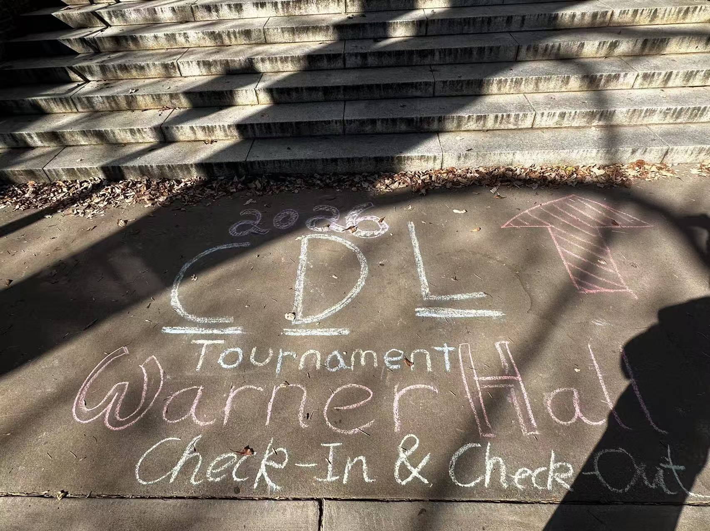

COMM 4351 · Marketing Analytics with Big Data
Guest Lecturer
September 2025 – December 2026
Professor Natasha Foutz
Taught Multi-Agent Orchestration in Market Research workflows, designing Retrieval Augmented Generation (RAG) systems for preserving agent memory in such workflows, and Python basics in data manipulation and exploratory data analysis.

SARC 5400 · Data Visualization
Teaching Assistant
January 2025 – April 2025
Professor Eric Field
Taught and advised Data Visualization & Story Telling Techniques and supervised MSDS student final data visualization.

Charlottesville Debate League
Debate Coach & Tournament Chair
January 2024 – Present
I joined the Charlottesville Debate League as a debate coach and taught for a year at several local middle schools before transitioning to tournament committee chair, where I organized, planned, and managed speech and debate tournaments for Charlottesville middle school students.




GBAC 7209 · GBAC 7215 · Data Analytics II & III
Teaching Assistant
January 2026 – April 2026
Professor Mousavi
Taught and graded MSBA data analytics course student homework and projects, covering topics on predictive analytics, deep learning, and text analytics.